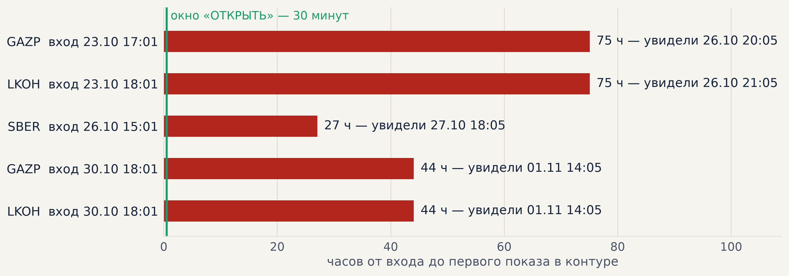
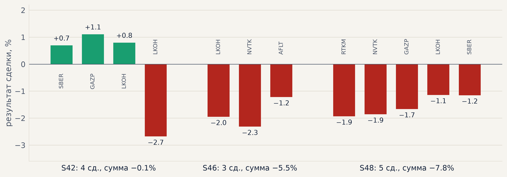
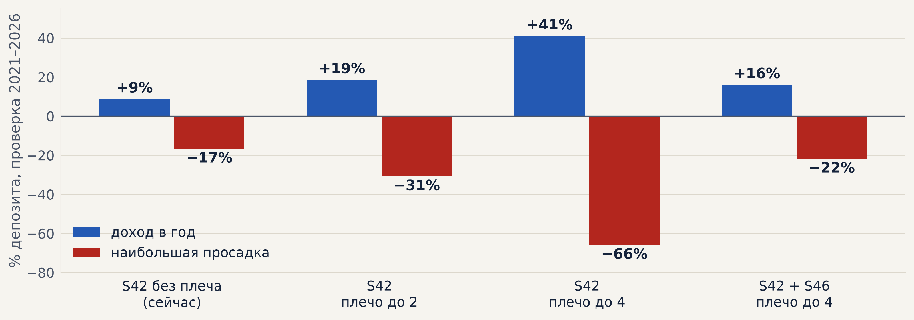

| дата | что | зачем |
|---|---|---|
| 27.10 | Протокол созвона 26.10; разбор слайда «Ровнее, но меньше»; правило счёта 15 тыс. ₽ на истории | на деньги — один S42 (T50): с S46/S48 та же доходность, но просадка −29% против −17% |
| 28.10 | Ответы Тимуру «как торговать»: плечо, пороги просадки, возобновление; сделки выходного дня (T51) | пробный этап — S42 без плеча; стоп при −12% — повод разобраться, а не механика |
| 28.10 | Бот по ТЗ Тимура + инструкция PDF; исполнение через API (лимит ≤ сигнал + 0.3%, стоп и трейлинг у брокера) | торговать по кнопке, не руками в терминале |
| 28.10 | Конспект гайда OsEngine (Smart-Lab); тревоги: дивидендная отсечка, сверка бумаг с брокером, просадка счёта, место на диске | соседние проекты заняли диск — контур полдня не считал S46/S48 |
| 29.10 | Архив минуток на Яндекс Диске (ночью, 227 файлов, 652 МБ); команды /check, /ask, /chart; LKOH — всегда 1 лот | место на сервере; вопросы Claude прямо из группы |
| 29.10 | Стоп-кран снят (Денис); сообщения о снятии показывают, где стратегия уже в позиции | было непонятно, почему нет «ОТКРЫТЬ» |
| 03.11 | Найдена и исправлена задержка входов S42; протокол созвона 30.10 | без этого контур не дал бы ни одной сделки |
«ОТКРЫТЬ» приходит, только если вход случился не раньше 30 минут назад. Все пять входов всплыли задним числом и сразу ушли в «держать».

tests/test_live_signals.py. Уже работает: «ОТКРЫТЬ» придёт в :05–:07 после входа.| старый код | исправленный | |
|---|---|---|
| GAZP | ничего | ОТКРЫТЬ по 117.3, стоп 112.1 |
| LKOH | ничего | ОТКРЫТЬ по 6302, стоп 6134 |
Почему не поймали раньше. Бумажный прогон 22.10 («33 сделки из 33») считал на полном файле, где будущие минуты уже есть и разметка известна. Для живого режима это не доказательство — повторим честно, обрезая данные по каждому часу.
Чего стоило. На счёт попали бы только входы 30.10 (стоп-кран снят 29.10): LKOH закрыт по стопу −2.7%, GAZP сейчас −2.2% — около −270 ₽. В этот раз ошибка уберегла от убытка, но без исправления сделок не было бы вовсе.
Закрытые сделки 27.10–02.11, % на сделку. S42 — по SBER, GAZP, LKOH; S46 и S48 — по 19 акциям, на бумаге.

8 сделок — мало для выводов: сверка с бэктестом пишет «мало сделок». Но и на свежих месяцах 12.06–24.10 S46 был в минусе (32 сделки, −5.1%), S48 около нуля. На деньги их не включаем.
Взять все сигналы на 15 тыс. ₽. Проверка 2021–2026, % депозита, без платы брокеру за плечо.

S42 берёт все сделки уже при плече 2, но просадка −31%; при плече 4 — −66%. Лучшее соотношение — S42 + S46 с плечом до 4, но S46 сейчас в минусе. Пробный этап — S42 без плеча.
/stop и разбор за 1–2 дня/set, текущее состояние — /status, /check, /chart.| № | задача | готово, когда |
|---|---|---|
| 1 | Первая сделка по кнопке. SBER и LKOH свободны, GAZP в позиции S42 до 09.11 | сделка записана в журнал счёта |
| 2 | Честный бумажный прогон 12.06–30.10: данные обрезаны по каждому часу, как у живого контура | таблица «вход — когда увидели» |
| 3 | Меньше задержка: S42 первым шагом в :01–:02, S46/S48 после | «ОТКРЫТЬ» в группе до :03 |
| 4 | Стопы 3/4/5% от входа у S42 (T46) | отчёт с графиком |
| 5 | Гипотезы из банка — Claude параллельно, в журнале экспериментов | вердикты по PF с графиком |
| 6 | Тагир — банк источников знаний и классификация стратегий | список источников в банке |
docs/results/bot_guide.pdf | инструкция к боту |
docs/results/launch_questions.md | разбор вопросов 26–28.10: счёт, плечо, просадка |
docs/results/inference_tz.md | ТЗ инференса: контур, тревоги, диск, архив |
docs/results/osengine_notes.pdf | конспект гайда OsEngine под нашу связку |
docs/meetings/2026-10-26_timur.md, 2026-10-30_timur.md | протоколы созвонов |
scripts/live_bot.py, live_account.py, live_exec.py | бот, счёт, исполнение через API |
scripts/live_signals.py | сигналы S42 (исправлена задержка) |
docs/results/weekly/2026-11-02/ | графики этого отчёта (scripts/weekly_charts.py --week 2026-11-02) |